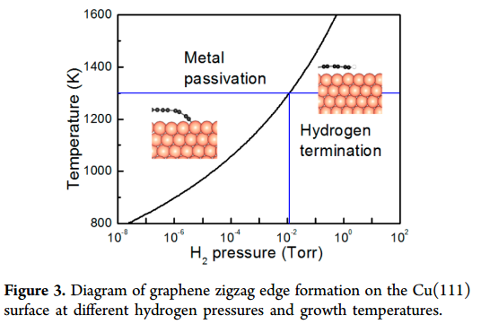
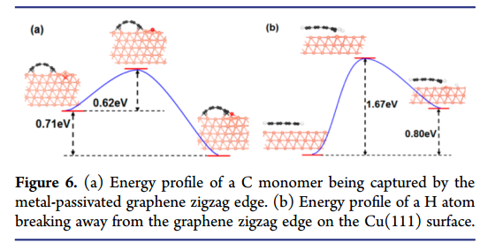

1 Transition State in VASP
- VTST, CI-NEB[1] and SSNEB[2].
2 Butler-Evans-Putterman Relation
[3]there is a clear, linear Brønsted–Evans–Polanyi-type (11, 12) relationship between the activation energy for dissociation and the nitrogen–surface bond energy.


3 Kinetics with Pressure[4]
- The rate of the C monomer being captured can be roughly estimated as R_{cap}=\frac{exp(-E_{cap}/k_BT)}{(exp(-E_{cap}/k_BT)+exp(-E_{didff}/k_BT)}\sim99.5\% where Ecap (0.62 eV) and Ediff (1.15 eV) are the activation energies of the C atom being captured by the edge and diffusing through the border, respectively, kB is Boltzmann’s constant, and T (~1300 K) is a typical temperature of graphene CVD growth.

Fig. 1: H2 phase diagram

Fig. 2: C capture an diffuse
The Gibbs free energy calculation and the diagram of graphene edges in CVD growth. The thermodynamic diagram of graphene edges on a metal surface can be obtained by calculating the Gibbs free energy difference, ∆G, between H-terminated and metal passivated graphene edges[5] {\Delta}G ={\Delta}E_f+{\Delta}F_{vib}-N_H\mu_H\ (1) where {\Delta}E_f is the formation energy difference between H-terminated and metal passivated graphene edges, {\Delta}F_{vib} is the free energy of H at the graphene edge due to the vibration, NH is the number of H atoms at the graphene edges, and \mu_H is the chemical potential of H which is a function of H2 partial pressure p and temperature T. {\Delta}F_{vib} can be calculated as[6] {\Delta}F_{vib}=-k_BT[\frac{\beta \hbar \omega}{e^{\beta \hbar \omega}-1}-ln(1-e^{-\beta \hbar \omega})], Where \omega is the vibration frequency. The vibration frequencies of the system are calculated by the VASP (details shown in the method part of the main text) by software package. The frequencies of an optimized local minimum contains 3N-6 positive real eigenvalues (where N is the number of atoms). In the vibrational frequencies calculations, the bottom metal atoms are frozen. The Hessian matrix was built by displacing individual atoms along the coordinate directions, with a Cartesian displacement of 0.02 Bohr.
The chemical potential of hydrogen can be written as[5] 2\mu_H=E_{H_2}-k_BTln(\frac{k_BT}{p}\times g \times \zeta_{trans}\times \zeta_{rot}\times \zeta_{vib}) where E_{H_2} is the energy of a H2 molecule at the temperature of 0 K, g is the degree of degeneracy of the electrons. \zeta_{trans}, \zeta_{rot} and \zeta_{vib} are the partition functions for translational, rotational, and vibration motions, respectivelyMethod from[5] We choose the ideal, bare 1\times 1 surface (relaxed but unreconstructed) as our reference, and define the Gibbs free energy of formation {\Delta}G^f as follows: {\Delta}G^f=E_{tot}[GaN(0001)]-E_{tot}[GaN(0001),ideal] +{\Delta}F_{vib}-n_{Ga}\mu_{Ga}-n_N\mu_N-n_{H}\mu_{H} E_{tot}[GaN(0001)] is the calculated total energy for the surface under study, and E_{tot}[GaN(0001),ideal] is the total energy of our reference system. n_Ga(N,H) is the number of Ga(N,H) atoms added to the unit cell (positive or negative). {\Delta}F_{vib} includes vibrational contributions to the free energy and is discussed below. \mu_{Ga} and \mu_{N} are the chemical potentials of Ga and N, i.e., the free energies of the reservoirs with which Ga and N atoms are exchanged.
Invoking equilibrium with GaN[8] leaves us with a single parameter to describe the stoichiometry, for which we choose \mu_{Ga}. \mu_{Ga} varies over the thermodynamically allowed range: \mu_{Ga[bulk]}+{\Delta}H_f[GaN]<\mu_{Ga}<\mu_{Ga_{bulk}}, the upper limit corresponding to Ga-rich conditions, the lower limit to N-rich (\mu_N=\mu_{N[N_2]}. {\Delta}H_f[GaN] is the enthalpy of formation (negative for a stable compound). Our calculated value for {\Delta}H_f[GaN] is 21.24 eV (experiment: 21.17 eV, Ref. [9]). \mu_{H}, finally, is the free energy of H2 and describes the abundance of H in the environment.
The temperature (and pressure) dependence of the reservoirs has also been included in Eq. (1); this is particularly important for gaseous species, e.g., for hydrogen: 2\mu_H=E_{H_2}+k_BTln(\frac{pV_Q}{k_BT}-ln Z_{rot}-ln Z_{vib}] where EH2 is the energy of an H2 molecule, kB is the Boltzmann constant, T is the temperature, and p is the pressure. V_Q=(h^2/2\pi m k_B T)^{3/2} is the quantum volume, and Zrot and Zvib are the rotational and vibrational partition functions.
- Method from APPENDIX[6] The vibrational contribution to the Gibbs free energy comprises vibrational energy and entropy[cf. Eq. (15)]. Both can be calculated from the partition function of an N-atomic system[34] Z=\sum\limits_{i=1}^{3N}\int\frac{d\mathbf{k}}{(2\pi)^3}\sum\limits_{n=0}^{\infty}exp(-[n+1/2]\beta\hbar\omega_i(\mathbf{k})) where \beta=1/k_BT and the omega_i(\mathbf{k}) are the 3N vibrational modes. The vibrational energy is then given by E_vib(T,V,N)=-\frac{\partial}{\partial \beta}lnZ and the entropy is defined as S^{vib}(T,V,N)=k_B(lnZ+\beta E^{vib}) Writing F^{vib}(T,V,N) as a frequency integral including the phononic density of states, \sigma(\omega), and using the relation F^{vib}=E^{vib}-TS^{vib}., one arrives at F^{vib}(T,\omega)=\hbar \omega(\frac{1}{2}+\frac{1}{e^{\beta\hbar\omega}-1})-k_BT[\frac{\beta \hbar \omega}{e^{\beta \hbar \omega}-1}-ln(1-e^{-\beta \hbar \omega})]
4 Transition State Estimation
- [7]Theoretically, the reaction rate is quantitatively described as R=CK,where C is the concentration of the reactant, and K=10^{12}e^{-E_b/k_BT} (Eb: reaction barrier) is the reaction constant. Hence, the reaction can be easily controlled by means of either C or T.
- [8]Experimental coalescence of C60’s inside a CNT has been reported[2,4] at around T=1500 K within t~24 h. The barrier can be very roughly estimated as B=4.0– 4.5 eV following B=k_BTln(\nu t), where \nu ~ 1013 is the attempt frequency and kB is the Boltzman constant.
- [9]these defects remain kinetically inaccessible because of the large activation barrier, E*. Its probability rate is N\nu e^{-E^*/k_BT}, where \nu =k_BT/h\approx 10^{13} s-1 is the standard expression from transition-state theory[10] for the frequency of attempts to cross the transition state (if one neglects the vibrational entropy change S* upon activation). Here N is the number of equivalent bonds in the sample, which is typically one-third of all of the bonds. Therefore, SW probability over the test duration t becomes high (\approx 1) if the barrier is sufficiently reduced by the applied tension to the ‘‘demarcation energy’’ level E^*=k_BTln(N\nu t).
5 Growth Model
- [11]As anticipated, the carbon monomer concentration needed to equilibrate relatively large graphene islands increases with increasing temperature. Assuming c^{eq} \propto e^{-E_{form}/k_bT} Typically, the edge velocity in film growth is assumed to be proportional to the supersaturation: v = m(c − c^{eq}) where the step mobility m is proportional to the rate at which C in the adatom sea is attaching (and detaching) at each point along the step edge in equilibrium.
The density of these clusters in the supersaturated adatom sea depends exponentially on the energy difference between n isolated C adatoms and the energy needed to form the n-atom cluster En: c_n=e^{n\mu/k_BT-E_n/k_BT}=(\frac{c}{c^{eq}})^ne^{-E_n/k_BT} where the monomer sea is taken to be an ideal lattice gas with C chemical potential \mu=k_BTln(c/c^{eq}) If we now assume that the growth velocity is proportional to how far this cluster concentration is out of equilibrium, we obtain v=m_n(c_n-c_n^{eq})=m_ne^{-E_n/k_BT}[(\frac{c}{c_{eq}})^n-1]=B[(\frac{c}{c_{eq}})^n-1] For the case when n = 1, the expected linear kinetics of monomers is reproduced.
- [12]Knowing C monomer concentrations, we can calculate the ethylene sticking probability, which is the ratio of the flux of incident ethylene molecules to the rate of change of adsorbed C adatoms. The ethylene sticking probability s is: s=\frac{dn_{ads}/dt}{2dn/dt}=\frac{\rho dc/dt}{2p/\sqrt{2\pi mk_BT}} where nads and n are the numbers of adsorbed C monomers and incident ethylene molecules, respectively; c is the C monomer concentration in monolayers (see section 2), \rho is density of C atoms in graphene, p is the ethylene pressure measured using a pressure gauge sensitivity factor of 2.6.
Classically, the graphene nucleation rate for a given supersaturated monomer concentration is proportional to the probability of the formation of an island of the critical size:[13] R_{nul} \propto e^{-G(n^*)/k_BT}\ (4) where G(n) is the free energy of an island with n atoms, and n∗ is the minimum size of an island that will grow from the monomer environment. Figure 12 shows that this rate becomes appreciable at all temperatures when c ≈ 2ceq, i.e., when the carbon chemical potential with respect to graphene is \mu=k_BTln(c/c^{eq})=k_BTln2 \ (5). The dependence of G(n) on \mu is given by G(n)=E(n)-\mu n\ (6) where E(n) is the energy difference between n carbon atoms in an island or cluster and a graphene crystal. Substituting equations (5) and (6) into equation (4) gives a nucleation rate of R^{ncul} \propto 2e^{n^*}exp(-E(n^*)/k_BT) Rnucl is defined as the rate at which nucleation becomes fast enough to be observable. Thus, the rate must be approximately independent of temperature. The simplest scenario for this is that n* does not vary with temperature and E(n*) is not much larger than kT ≈ 0.1 eV. The latter requirement implies that the critical island does not contain many broken C–C bonds, which cost several eV. - [14]During crystal nucleation or growth, the change in Gibbs free energy as a function of the number of atoms in the crystalline phase, G(N)=E(N)-{\Delta}\mu\times N where {\Delta}\mu is the chemical potential difference between this crystalline phase and the atom source, dominates the behavior of both nucleation and growth.
From classical nucleation theory[28], the 2D nucleation rate of graphene on Ni(111) surface can be estimated as follows: R_{nul}=R_0e^{-G^*/k_BT} Where kB is the Boltzmann constant and the prefactor R0 can be approprimately estimated as R_0 \approx 4\times 10^{21} cm-2s-1.
From classical nucleation theory, the 2D nucleation rate is R_{nul}=\omega^* \Gamma N_1 exp(-G^*/k_BT)=R_0exp(-G^*/k_BT) where \omega^* is the attachment rate of C atoms into a cluster of critical size, \Gamma = \sqrt{G^*/(4{\pi}k_BTN^{*2})} is the Zeldovich factor, and N1 is the concentration of atoms/molecules.[5] Investigating the nucleation rate of graphene on a terrace or near a step edge requires an appropriate estimation of the pre-factor R0. The attachment rate can be estimated as \omega^*=N_{edge}^* p(\nu exp(-E_B/k_BT)) , where N_{edge}^* is the number of attachment sites of the 2D nucleus. For a sp2 network structure, N_{edge}^* \sim \sqrt{6 \times N^*} \sim 10, and \nu \approx 10^{13} s-1. Eb is the barrier for attaching a C atom to the graphene. Considering the active sites on the bare graphene edge, Eb can be estimated as the barrier of a C atom diffused on the Ni surface, which is ~ 0.50 eV[6]. The occupancy rate is p ~ N1. From previous studies, we know that the concentration of C monomers on a metal surface is roughly 0.01 mono-layer graphene (MLG).[7] Hence, N1 ~ 0.3817 nm2 and p ~ 0.01. To estimate the magnitude of the pre-factor, R_0 = \omega \Gamma N_1 , assume that N* = 10 and kBT ~ 0.1 eV (which is consistent with the typical temperature of CVD graphene growth, i.e., 800-1000oC), we then have R_0 \sim 4\times 10^{21} cm-2s-1. Thus, the nucleation rate is R_{nul} = R_0 exp(−G*/k_BT) \sim exp(-G*/kT + 49)\ cm^{-2} s^{-1}. - [15]Instead, a more efficient way is to make use of the analytical expression[16], \gamma(\chi)=2\gamma_A sin(\chi)+2\gamma_Z cos(30^\circ-\chi), which reduces the direct computations to just the energies of two principal directions, A and Z.
6 Lifetime against Oxidation
- [17]In principle, the related average lifetime of phosphorene before oxidation can be evaluated by: \tau\sim e^{\frac{E_1}{k_BT}} where E1 is the highest barrier in the oxidation process, T is the absolute temperature, and kB is the Boltzmann constant. So the lifetime increase is \frac{\tau^*}{\tau}=e^{\frac{E_1^*-E_1}{k_BT}}
- Under ambient conditions, oxygen molecules are present in their triplet ground state. When an oxygen molecule collides with a P–P bond, there is a possibility to overcome the barrier E1, causing a transition to form the singlet oxygen state. Using the ideal gas law and kinetic theory of gases, we can calculate the average collision rate \Gamma of an oxygen molecule with a P–P bond: \Gamma=\frac{P}{4k_BT}\sqrt{\frac{8k_BT}{\pi m}S} where P is the partial pressure of an O2 molecule, which is 0.2 atm under normal air conditions, m is the atomic mass of an O2 molecule, and S is the average area that a P–P bond takes. The average lifetime of a P–P bond before oxidation is \tau=\Gamma ^{-1}e^{\frac{E_1}{k_BT}} Under normal air conditions, \Gamma is about 108 times per second. Therefore, at room temperature, chemisorption of O2 to a P–P bond, or namely, oxidation of monolayer phosphorene, may happen in several tens of seconds. When phosphorene is on MoSe2 and under the −0.3 V−1 electric field, the average lifetime is prolonged to 1\times 10^6 seconds.
7 Zero point energy, entropy and prefactor
7.1 hTST-1[18]
- Overbarrier jump frequency between two local minimum is expressed as: \nu=\nu^*exp(-\frac{E_{ac}}{k_BT}) \nu^*—Attempt frequency(exponential prefactor), E_{ac}— Activation energy.
- In hTST, E_{ac}=E^{TS}-E^I-(\frac{1}{2}\sum\limits_{i=1}^{3N}\hbar\omega^I_i-\frac{1}{2}\sum\limits_{i=1}^{3N-1}\hbar\omega^{TS}_i)=E_{barrier}-(ZPE^I-ZPE^{TS})
- Quantum-mechanically modified prefactor in Eyring’s form is expressed as: \nu^*_{qm}=\frac{k_BT}{h}\frac{\prod\limits_{i=1}^{3N}(1-exp(-\frac{\hbar\omega^I_i}{k_BT}))}{\prod\limits_{i=1}^{3N-1}(1-exp(-\frac{\hbar\omega^{TS}_i}{k_BT}))}
- At high-temperature limit (classical limit) prefactor in Vineyard’s form is expressed as: \nu^*_{cl}=\frac{1}{2\pi}\frac{\prod\limits_{i=1}^{3N}\omega^I_i}{\prod\limits_{i=1}^{3N-1}\omega^{TS}_i}
7.2 Entropy[19]
H(T)=E{elec}+E_{ZPE}+\int_{0K}^T C_V dT E_{ZPE}=\frac{1}{2}\sum\limits_{i=0}^{\#DOF}\hbar\omega_i \int\limits_{0K}^TC_VdT=\sum\limits_{i=0}^{\#DOF}\frac{\hbar\omega_i}{exp(\hbar\omega/k_BT)-1} S(T)=k_B\sum\limits_{i=0}^{\#DOF}(\frac{\hbar\omega_i/k_BT}{\exp(\hbar\omega_i/k_BT)-1}-ln(1-exp(-\hbar\omega_i/k_BT))) * Rate constants estimtated by: k_i=\nu_i{\cdot}exp(-E_a/k_BT)=\frac{k_BT}{h}{\cdot}exp(-\Delta{S}/k_B){\cdot}exp(-E_a/k_BT)
7.3 Prefactor[20]
- Vibrational partition function given by: q=\prod\frac{1}{1-exp(-\hbar\omega_i/k_BT)} S=k_Bln(q)
- Prefactor given by(harmonic transition state theory): \nu=\frac{k_BT}{h}\frac{q_{TS}}{q_I}=\frac{k_BT}{h}{\cdot}exp(-\Delta{S}/k_B)